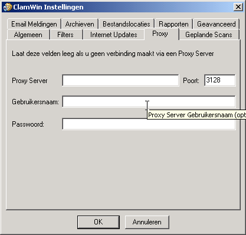
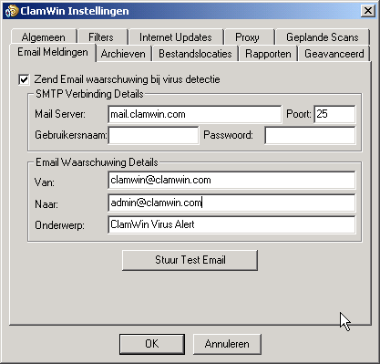
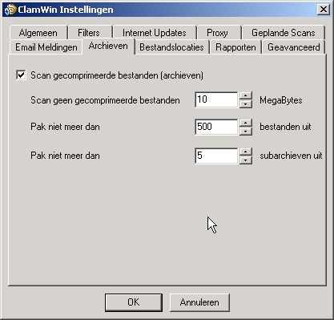
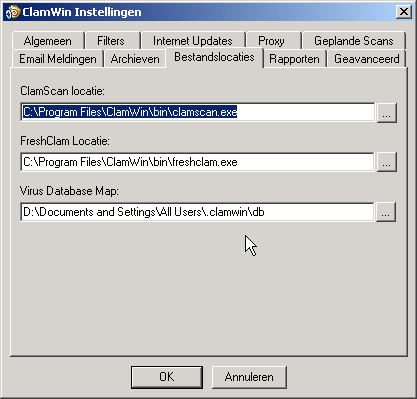

Om ClamWin in te stellen kunt u met de rechtermuisknop klikken op het icoon in de System Tray en Configure ClamWin selecteren. U kunt ook van in het hoofdvenster het menu Tools openen en daarin de optie Preferences aanklikken. Er wordt dan een dialoogvenster met negen tabbladen getoond (zie afbeeldingen). Het dialoogvenster sluiten en de veranderingen bewaren doet u door op OK te klikken. Via de Cancel toets sluit u het dialoogvenster zonder de veranderingen te bewaren.
De verschillende tabbladen of pagina's worden in de volgende paragrafen besproken.
Deze pagina bevat twee kaders : Scan Opties en Besmette Bestanden.
Het kader Scan Opties bepaalt ClamWin's gedrag tijdens het scannen. De opties zijn hier als volgt :
Scan In Submappen : Vink deze optie aan om ClamWin zowel de bestanden in de gespecificeerde map als die in de onderliggende mappen te laten scannen.
Enkel besmette bestanden tonen : Wanneer ClamWin een scan uitvoert worden de namen van de gescande bestanden getoond. Als u echter deze optie selecteert zal ClamWin enkel de namen van besmette bestanden tonen. Hierdoor zou de snelheid in geringe mate verhoogd kunnen worden.
Toon de vooruitgang Bestand Gescand % : Wanneer deze optie geselecteerd is, zal ClamWin de naam van het bestand tonen dat op dat moment wordt gescand, met de vooruitgang in percentage tussen haakjes. Voor gecomprimeerde bestanden wordt een roterend streepje weergegeven, wat erop duidt dat de scan wel degelijk uitgevoerd wordt.
Het kader Infected Files bevat opties die bepalen welke actie ClamWin moet ondernemen wanneer het een virus detecteert. Hier kan slechts één optie worden gekozen. De opties zijn :
Enkel rapporteren : Wanneer ClamWin een virus vindt zal het dit enkel rapporteren.
Verwijderen (Voorzichtig gebruiken): Deze keuze betekent dat ClamWin besmette bestanden voorgoed zal verwijderen. Het bestand wordt niet in de Windows prullenmand geplaatst.
Verplaats naar quarantaine map : In het geval van deze keuze zal ClamWin een besmet bestand verplaatsen naar de opgegeven bestandsmap. Om deze map te veranderen kunt u de locatie ingeven in het ingaveveld, of op de ... knop drukken om de map te zoeken.
Als er al een bestand met
dezelfde naam aanwezig is in de quarantaine map, zal ClamWin een
extensie aan de bestandsnaam toevoegen bestaande uit een punt en een
volgnummer, zodat het bestaande bestand niet wordt overschreven.
Bijvoorbeeld : als er een bestand “eicar.com”
bestaat in de quarantaine map, dan zal het tweede bestand met
dezelfde naam hernoemd worden naar eicar.com.000.
Een derde copy wordt dan eicar.com.001,
enzovoort.
Via deze pagina kan ClamWin ingesteld worden zodat het enkel bestanden van bepaalde types scant, of zodat het bestanden van bepaalde types zal negeren. Deze twee instellingen kunnen ook gecombineerd worden om een grotere controle te krijgen over de bestandstypen die worden gescand.

Specifieke bestanden kunnen gefilterd worden door de volledige locatie van het bestand in te geven, bijvoorbeeld :
C:\Path\to\folder\File.ext
Mappen kunnen gefilterd worden door de locatie (inclusief *) in te geven. Bijvoorbeeld :
C:\Path\to\folder\*
Let erop dat * niet hetzelfde is als \, dus wanneer u een map met alle submappen wil uitfilteren, zal u een reguliere expressie moeten gebruiken en .* (punt ster) moeten toevoegen op het einde:
<C:\\Path\\to\\folder\\.*>
U kunt reguliere expressies gebruiken voor een grotere flexibiliteit, maar deze moeten dan binnen punthaken geplaatst worden ( <Reguliere expressie> ). U moet ook \\ gebruiken omdat \ een gereserveerd karrakter is. Meer informatie en tutorials over reguliere expressies zijn te vinden op het Internet. Gebruik hiervoor uw favoriete searchengine en zoek op regular expression tutorial.
Standaard worden de volgende bestandstypen uitgesloten van de virus scans :
*.dbx (gebruikt door Microsoft Outlook Express om e-mails en dergelijke te bewaren)
*.tbb (gebruikt door Ritlabs The Bat! om e-mails en dergelijke te bewaren)
*.pst (gebruikt door Microsoft Outlook om gegevens te bewaren)
Op deze pagina kunt u controleren hoe ClamWin updates ophaalt van de virus database.

Automatische Virus Database Updates inschakelen : Als deze optie is aangevinkt zal ClamWin automatisch controleren of er updates voor de database beschikbaar zijn. U kunt ook instellen hoe vaak dit gecontroleerd moet worden en wanneer.
Wanneer ClamWin niet draait (of de PC uit staat) op het ingestelde tijdstip, zal de update worden uitgevoerd op het eerstvolgende ogenblik wanneer ClamWin wordt gestart (meestal wanneer de PC wordt aangezet). De enige uitzondering hierop is wanneer de update frequentie is ingesteld op “workdays”. In dat geval zal er tijdens het weekend niets gebeuren tot maandag.
Het adres van de server waarvan de updates moeten worden opgehaald kan handmatig ingesteld worden. Meestal zult u hier de standaard instellingen willen behouden (database.clamav.net). Indien u echter over een lokale server beschikt die gesynchroniseerd is met database.clamav.net (een zogenaamde mirror), kunt u die server instellen.
Update Virus Database bij aanmelding : Als deze optie is gekozen, zal ClamWin updates ophalen telkens als een gebruiker zich aanmeldt op de PC.
Waarschuwing bij nieuwe ClamWin Releases: Met deze optie kan u ClamWin automatisch laten controleren of er nieuwe versies van ClamWin vrijgegeven zijn. Deze controle gebeurt 5 minuten na het opstarten van ClamWin, en daarna om de 24 uur.

Indien u via een proxy server verbonden bent met het internet, moet u de details van deze verbinding ingeven in dit tabblad. Zoniet, laat dan alle velden leeg. De meeste gebruikers hebben geen proxy nodig, en kunnen deze instellingen gerust negeren.

Op
deze pagina kunnen scans ingesteld worden zodat deze op gezette
tijden uitgevoerd worden. De details van deze geplande taken worden
hier getoond. Om een taak toe te voegen klikt u op Add
en geeft u een beschrijving, frequentie en tijd in en de map die
gescand moet worden. Een bestaande taak kan aangepast worden door op
Edit te klikken en verwijderd worden via de knop
Remove.
De geplande taken kunnen geactiveerd of uitgeschakeld worden door op de respectievelijke knop te drukken. Een uitgeschakelde taak zal dan niet op de geplande tijden uitgevoerd worden.

U kunt ClamWin zo instellen dat een e-mail rapport wordt gestuurd wanneer een virus wordt gedetecteerd. Selecteer hiervoor de optie Zend Email waarschuwing bij Virus Detectie. Vul de benodigde gegevens in om een verbinding te maken met de SMTP server , en de details voor de boodschap (onderwerp, zender en ontvanger).
Opmerking: somige SMTP servers vereisen geen gebruikersnaam en wachtwoord. Indien dit het geval is kunt u deze velden leeg laten.
Om de instellingen te testen klikt u op de knop Stuur Test Email.
Wanneer deze optie is geselecteerd zal ClamWin een e-mail rapport gestuurd worden telkens wanneer een virus is gevonden. Deze e-mail zal de naam van de computer bevatten vanaf waar de e-mail is gezonden, en een kopie van het scan log bestand.
ClamWin kan bestanden in gecomprimeerde bestanden (zoals .zip bestanden) controleren op virussen.

Op deze pagina kunt u instellen of ClamWin al dan niet deze gecomprimeerde bestanden moet controleren. U kunt ook een maximale grootte instellen voor de gecomprimeerde bestanden die moeten worden gecontroleerd, alsook een maximaal aantal bestanden dat moet worden gecontroleerd, en een maximum aantal gecomprimeerde bestanden dat binnenin het bestand moeten worden gecontroleerd.
Scannen binnen gecomprimeerde bestanden kan een scan trager maken, dus deze optie uitschakelen kan de tijd die nodig is per scan verminderen.

Deze pagina laat toe de map te veranderen waarin de ClamScan en FreshClam programmabestanden en de virus database zich bevinden (FreshClam is het programma dat de automatische updates van de virus database verzorgt). Deze gegevens worden ingesteld tijdens de installatie en moeten normaal nooit worden aangepast.
Verander deze gegevens nooit tenzij u weet wat u doet ! Indien ze niet correct zijn zal ClamWin niet meer werken.
Deze pagina laat u toe de mappen en bestandsnamen van de log bestanden te veranderen. De meeste gebruikers zullen dit nooit hoeven aan te passen.

U kunt ook instellen of er pop-up meldingen moeten worden weergegeven via deze pagina. Dit gebeurd reeds bij een standaard installatie. Door de optie Toon een Pop-up waarschuwing in de taakbalk uit te schakelen voorkomt u dat deze pop-ups worden getoond wanneer een virus wordt gedetecteerd, wanneer de virus database is vernieuwd, enzovoort.

Deze pagina bevat zes instellingen. Voor de meeste gebruikers zullen de standaard instellingen voldoen.
Behandel bestanden als mailboxen : Wanneer deze optie is aangevinkt zal ClamWin alle bestanden bekijken alsof het MIME e-mail boodschappen waren (bijvoorbeeld Unix/Linux mailboxen, .eml bestanden gegenereerd in Outlook Express, ...). Ook niet-MIME bestanden kunnen met deze optie gescand worden, doch dit zal het scan proces vertragen.
Controleer bijlagen en macro's van MS Office Documenten : Met deze optie zal ClamWin MS Office documenten controleren op macrovirussen.
Detecteer corrupte uitvoerbare bestanden : Met deze optie geselecteerd zal ClamWin de structuur van uitvoerbare bestanden controleren en corrupte bestanden als virussen beschouwen en behandelen.
Extra Clamscan opdrachtregel parameters: Als u extra opties voor ClamScan wil gebruiken die momenteel nog niet door ClamWin worden ondersteund, kan u ze hier toevoegen.
Beperk grootte van logbestand tot : Oude logbestanden zullen indien nodig automatisch gewist worden om de totale grootte van de log bestanden beperkt te houden tot de ingestelde grootte.
Scanner Prioriteit : Deze kan ingesteld worden op Low, Normal of High, en bepaalt hoe de totale CPU-tijd wordt verdeeld tussen ClamWin en de andere applicaties op de PC. Deze optie op High zetten kan het scan process versnellen, maar andere applicaties vertragen. Anderzijds zal met deze optie op Low het scan proces vertragen, maar zullen andere applicaties hier minder invloed van ondervinden.